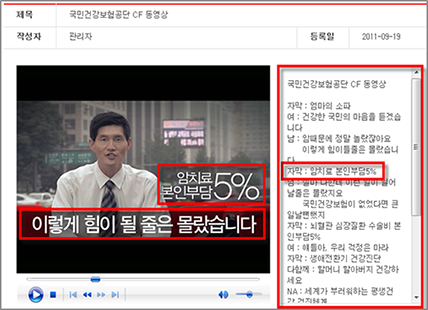
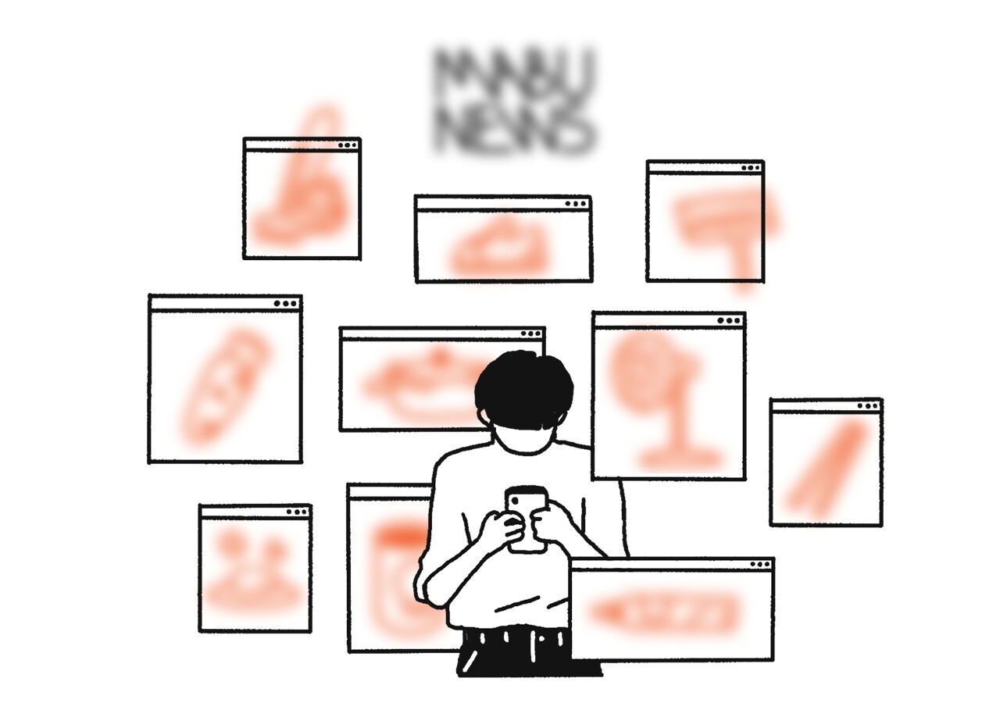

목차
1. 서비스 및 작업 목적
접근성이란?
접근성이란 ‘모든 사용자가 신체적·환경적 조건에 관계없이 앱과 웹에 접근하여 사용하고 즐길 수 있도록 보장하는 것’이다.
2008년 4월 11일부터 시행된 「장애인 차별금지 및 권리구제 등에 관한 법률」 제21조 및 동법 시행령 제14조에 의거하여 공공 및 민간 웹 사이트의 웹 접근성 준수가 의무화되었다.
접근성 원칙
접근성의 국제 기준은 WCAG (Web Content Accessibility Guideline)이다. 이를 기반으로 한 “한국형 웹 콘텐츠 접근성 지침 2.1”에서 제시하는 4가지 핵심원리를 기준으로 한 접근성 원칙은 다음과 같다.
-
원칙 1. 인식의 용이성(Perceivable)
모든 콘텐츠(정보와 사용자 인터페이스 컴포넌트)는 사용자가 인지할 수 있도록 표시되어야 한다.
-
1.1 Text Alternatives (대체 텍스트 제공)
눈으로 화면을 볼 수 없는 경우, 이미지에 대한 설명을 대체 텍스트로 입력하여 스크린리더를 통해 정보를 인식하게 도와준다. 텍스트 아닌 콘텐츠는 그 의미나 용도를 인식할 수 있도록 대체 텍스트를 제공해야 한다.

QR코드나 바코드와 같은 이미지 정보는 대체 텍스트로 연결 링크를 제공해야 한다.
시각적으로만 인식이 가능한 이미지 캡차의 대체 수단을 제공해야 한다.
 https://www.cloudflare.com/ko-kr/learning/bots/how-captchas-work/
https://www.cloudflare.com/ko-kr/learning/bots/how-captchas-work/사람인지 봇인지 판단하기 위해 나온 테스트인데, 시각장애인이라면 소리를 들을 수 있게 음성도 같이 제공해주었다.
-
1.2 Time-based Media (대체 미디어 제공)
멀티미디어 콘텐츠에는 자막, 원고 또는 수화 등 대체 가능한 컨텐츠가 있어야 한다.
올바른 사례 - 영상의 음성정보 이외에 핵심 자막과 원고를 제공했음
-
1.3 Adaptable (적응 가능한)
정보나 구조를 잃지 않고 다른 방법(ex. 간단한 레이아웃)으로 표시할 수 있는 컨텐츠를 만든다.
예를 들면,
- 필수로 입력해야 하는 값에는 *나 텍스트를 빨간 색상으로 하여 눈에 잘 띄게 한다.
- 체크 박스 옆의 텍스트를 클릭해도 체크박스가 체크 된다.
- 여러 열로 이루어진 문서를 볼 경우, 왼쪽에서 오른쪽으로 위에서 아래로 읽는다.
- 여러 페이지의 설문지일 경우, 다음 페이지로 넘기는 버튼이 어디에 있는지 눈에 띄는 색상을 활용해 잘 찾을 수 있게 한다.
- 사용자의 정보를 기기에서 가져와 자동입력(autofill) 기능을 제공한다.
- 입력하는 내용 옆에 아이콘을 붙여 어떤 내용을 작성해야하는지 시각적으로 알려준다.
필수입력 표시, 다음 버튼이 눈에 잘 띄게 표시되어 있다.
-
1.4 Distinguishable (구별 가능한)
배경과 콘텐츠를 구분하여 사용자들이 쉽게 보고 들을 수 있게 한다.
이는 텍스트 색상, 크기, 행간과 배경 색상과의 대비 명도를 통한 강조, 이해하기 쉬운 시각적 자료 그리고 링크와 input등에 마우스나 키보드를 올렸을 때 나타나는 상태 등이 있다.
텍스트 콘텐츠와 배경 간의 명도 대비가 4.5 대 1 이상이 되도록 제공한다.
-
-
원칙 2. 운용의 용이성(Operable)
사용자 인터페이스 구성 요소는 조작 가능하고 내비게이션할 수 있어야 한다.
-
2.1 Keyboard Accessible (키보드 접근성)
모든 기능이 키보드로 동작할 수 있어야 한다.
예를 들면, 마우스의 드래그, 드롭은 복사, 붙여넣기로 대체 가능하며, 그림을 그리는 프로그램에서 생성, 사이즈 조절, 회전 등의 기능의 단축키가 존재한다. -
2.2 Enough Time (충분한 시간)
사용자가 충분한 시간을 갖고 읽고 사용할 수 있어야 한다.
대표적으로는 어떠한 콘텐츠에 시간 제한이 걸려있다면, 사용자가 직접 그 제한 시간을 끄거나, 조정하거나, 늘릴 수 있어야 한다. -
2.3 Seizures and Physical Reactions (발작과 신체 반응)
발작이나 신체 반응을 일으키는 방식으로 콘텐츠를 만들면 안된다.
예를 들면 1초에 3번 이상의 플래시 효과나 밝기가 너무 낮은 콘텐츠는 포함되면 안된다. -
2.4 Navigable (이동 가능한)
사용자들이 탐색하거나, 콘텐츠를 찾고, 어디에 있을지 결정하는 방법을 제공해야 한다. 주로 링크로 페이지를 이동하는 것을 말한다.
-
2.5 Input Modalities (입력 양식)
사용자가 키보드의 다양한 입력을 통해 기능을 보다 더 쉽게 조작할 수 있어야 한다.
-
-
원칙 3. 이해의 용이성(Understandable)
정보와 유저 인터페이스의 조작은 반드시 이해할 수 있어야 한다.
-
3.1 Readable (읽기 쉬운)
텍스트 콘텐츠 읽기 쉬우며 이해하기 쉬워야 한다.
-
3.2 Predictable (예측 가능한)
예측 가능한 방식으로 표시하고 작동해야 한다.
예를 들어, input 창을 마우스로 클릭할 경우, 해당 input 창 테두리의 색상이 바뀌며 활성화 된 걸 표시하는 것이 있다. -
3.3 Input Assistance (입력 도움)
사용자의 실수를 방지하고 수정할 수 있도록 도와주어야 한다. 예를 들어, 사용자가 잘못 입력한 경우, 빨간 테두리와 함께 어떤 형식으로 작성해야 하는지 알려주어야 한다.
-
-
원칙 4. 견고성(Robust)
콘텐츠는 보조 기술(assistive technologies)을 포함한 다양한 사용자 에이전트에 의해 해석될 수 있도록 견고해야 한다.
-
4.1 Compatible (호환 가능)
보조 기술을 포함하여, 현재 및 미래 사용자 에이전트와의 호환성을 극대화해야 한다.
예를 들어, 마크업 언어를 사용해 구현된 콘텐츠에서 요소들은 완전한 시작과 끝 태그를 갖고 있으며, 요소들은 그들의 스펙에 따라 중첩될 수 있으며, 중복된 속성을 포함하지 않는다.
-
시각장애인 고객에 대한 이해
주요 고객인 시각장애인에 대한 이해를 바탕으로 작업 의도 및 방향을 설정해보았다.
-
시각장애인들이 겪는 어려움과 그로 인한 정보 격차 발생
출처: 장애인 소비자 모바일 거래 실태조사_한국소비자원
우리나라에선 매년 웹 접근성 실태조사도 이뤄지면서 상황이 파악되고 있지만 개선 속도가 빠르진 않다. '웹 접근성 지침'처럼 가이드라인도 갖춰져 있지만 지침을 준수하라고 적극적으로 요구하거나 강제하고 있지 않아, 그 사이 피해를 보고 차별을 겪는 사람들은 늘어나고 있는 실정이다.
한국소비자원에서 소비생활 밀접 모바일 앱(쇼핑앱, 배달앱 등) 이용 경험이 있는 시각장애인 193명을 대상으로 설문조사를 시행한 결과,
상품 및 서비스 구매를 위한 정보를 확인할 당시 어려움을 겪었다고 답한 응답자는 92.2%로, 대다수의 시각장애인이 불편을 겪은 것으로 나타났다.
불편 사유로는, '대체 텍스트 미제공'을 선택한 비율이 가장 높았고, '지나치게 복잡한 화면구성', '대체 텍스트가 제공되지만 일부 단어가 생략' 등의 순으로 확인되었다. -
B free 쇼핑몰 작업 의도
자료를 통해 모바일 앱 불편 경험 및 사유를 살펴보고, 실제 쇼핑몰 앱을 보이스오버로 들어보면서 불편한 점을 파악하였다. 또한 시각장애인들의 쇼핑몰로 알려진 '소리마켓'을 들어보고 코드를 분석하여 아쉬운 점을 포함해 B free 쇼핑몰을 작업하였다.
B free 라는 이름은 Barrier free의 줄임말로, 누구나 장벽 없이 편안하게 쇼핑을 즐길 수 있는 쇼핑몰이라는 의미를 담고 있다. 또한 be free, 어떠한 조건이든 벗어나라는 이중적 의미도 담고 있어 불편함 없이 자유롭게 이용하기를 바라는 마음을 담았다.
2. 작업 전략
01. Universal Design
시각장애인들이라 하더라도 전맹, 준맹 등 보이는 정도가 다르다. 모든 사람들이 편히 정보를 인식할 수 있게 아이콘을 포함하되, 스크린리더에서는 읽히지 않게 background로 처리한다.
버튼 영역은 넓게 하고 텍스트 명도 대비는 크게 주어서 저시력 장애인들의 불편함을 최소화한다.
초점이동
포커스 순서를 강제로 변경하기 위한 tabindex 속성값을 사용하지 않으며, 문서의 논리적 순서를 고려하여 마크업한다.
background로 처리하여
스크린리더에 읽히지 않는
아이콘 이미지들
사용 빈도가 높은 요소들만
메인화면에 크고 심플하게 배치하여
빠르게 원하는 정보를 찾을 수 있다.
02. 고객 특성에 따른 상품정보 탐색과정 구성
'대화하며 쇼핑하기'를 통해 친근한 어투로 편안하게 쇼핑할 수 있게 도와준다. 또한 이용자들의 플로우를 분석하여 추천 기능을 통해 다음 대화를 유도하면서 구매 전환까지 이끈다. 해당 기능은 이용자가 어려움을 겪을 수 있는 상품 상세화면, 검색화면 등에 플로팅 버튼으로 배치하여 쉽게 이동할 수 있도록 한다.
대체 텍스트
텍스트 아닌 콘텐츠는 그 의미나 용도를 이해할 수 있도록 대체 텍스트를 제공해야 한다.
상품 이미지를 제외하고, 불필요한 img태그 마크업을 최소화한다. 화면에는 보이지 않고 스크린리더에서만 읽히는 sr-only 클래스를 이용하여 시각장애인에게 설명를 제공한다. sr-only 텍스트는 생략되는 단어 없이 충분한 정보를 담아 이해도를 높인다.
"찾는 상품이 없으신가요?"

"이 결제수단 삭제하기"
Tab, Popup 컨트롤에 사용되는 Wai-ARIA 요소들
Aria-selected: 선택된 tab은 스크린리더 사용자에게 선택된 tab 임을 알려주어야 하므로 aria-selected true, false를 사용하여 선택된 tab 요소를 알려준다.
Aria-controls: aria-controls는 선택한 요소에 영향을 받는 하위 요소가 현재 포커스 한 라인과 떨어져 있을 경우 스크린리더 사용자가 하위 요소가 열린 위치를 파악하기 어려우므로 관련된 하위 요소로 바로 이동할 수 있도록 해 주는 역할을 한다. Tab 역시 특정 tab을 선택한 경우 tab 패널이 시작되는 부분으로 바로 이동할 수 있도록 aria-controls를 포함할 수 있다.
Aria-hidden: aria-hidden이 true로 설정된 콘텐츠는 스크린리더의 콘텐츠 탐색을 제한한다. false인 경우 숨겨진 콘텐츠를 노출하여 콘텐츠를 탐색할 수 있다.
03. 구매 동기 부여와 구매 전환을 위한 의사촉진 활성화 방안
넘치는 광고에 피로를 느끼는 이용자들에게 사용자들의 진솔한 리뷰를 통해 신뢰할 수 있는 정보를 체계적으로 제공한다. 키워드를 제공함으로써 제품의 핵심 특징을 빠르게 파악하고, 불필요한 정보를 제거할 수 있다.
키워드 분석
-
내구성이 뛰어나요
92%
-
무게가 가벼워요
68%
-
포장이 꼼꼼해요
28%
04. 상품정보 아웃소싱과 구매대행에 따른 시스템 관리방안
상품이미지 대체 텍스트는 상품명에서 데이터를 가져와서 alt 속성으로 넣어준다.
![[라움에스알] 베니스 라탄 침대 소파 사이드 테이블](./img/product_img01.jpg)
광학 문자 인식(OCR)
광학 문자 인식(OCR)은 텍스트 이미지를 기계가 읽을 수 있는 텍스트 포맷으로 변환하는 과정이다. 예를 들어 양식 또는 영수증을 스캔하는 경우 컴퓨터는 스캔본을 이미지 파일로 저장한다. 이미지 파일에서는 텍스트 편집기를 사용하여 단어를 편집, 검색하거나 단어 수를 계산할 수 없다. 그러나 OCR을 사용하면 이미지를 텍스트 문서로 변환하여 내용을 텍스트 데이터로 저장할 수 있다.
11번가에서 사용 중인 '와들'의 AI OCR 솔루션을 도입하여 상세이미지 속 텍스트를 스크린리더가 인식하고 음성으로 변환할 수 있다. 이미지에 포함된 상품 정보, 배송 정보 등을 시각장애인도 제공 받을 수 있어 정보격차를 해소하는 동시에 지속적인 관리도 용이하다.